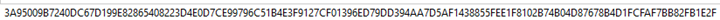

SHA512 (Secure Hash Algorithm 512-bit) is a member of the SHA-2 family. It was developed by the National Institute of Standards and Technology in 2001. SHA512 is mainly used in cases that need higher security requirements. SHA512 is a hash function which is used to map data of any size to a predetermined size. The size of the hash is 512 bits hence the name of it SHA”512”. Since the hash is so large, it reduces the chance of a hash Collison. SHA512 is used in many different protocols such as TLS, SSL, PGP, SSH, IPSec, etc. It can also be found working in blockchain technology. This shows the integrity and authenticity of the data. Since the hash length is so long, it makes it harder for attackers to reverse engineer the hash and get access to the data (Jagannath).
Hashing is a tool used in cybersecurity as an encryption method. It converts the data from a file into a fixed string of numbers and letters. Hashing does this using its algorithm called a hash function. For example, the SHA512 hash function has a fixed string length of 512 bits. This would be equal to 64 bytes. A letter or number character is usually a nibble (half of a byte – 4 bits) in length. This makes the pre-determined string a length of 128 numbers and letters. Fore example, here is the hash value for the phrase “Have a good day.” and the hash value of the phrase “Have a good day!”
Have a good day.
Have a good day!
This shows that just changing the period to an exclamation point causes an obvious difference. It changes every single character from the previous hash which shows how hard it will be to reverse engineer it.
Some examples of using SHA512 from Satvik Jagannath include the following:
This is a good thing to look for because you can compare the original hash to the current one to see if any data has been tampered with. This confirms the integrity of the data. If the hashes are the same, it confirms no data has been edited. If the hashes are different, then the data has been changed.
The digital signatures provide authentication for the data. A digital signature uses the sender’s private key which is unique to the sender that verifies and identifies that a user should have access to this data. This prevents unwanted users from accessing and changing it, affecting the integrity of the data.
Another way you can use SHA512 is to securely manage and store your passwords. Since SHA512 is difficult to reverse engineer, it can keep your passwords saved and stored securely.
This is like Data Integrity checking, but instead of checking data it is checking the integrity of files. If a change is made to a file, the hash is also changed. This will be given away if the integrity of the file has been changed.
SHA512 uses TLS (Transport Layer Security). This makes communication from the end user to a server secure. It provides an extra level of security with communication so the data can’t be intercepted, and reverse engineered.
The pros of SHA512 include security, speed, and it is commonly used and accepted. As mentioned, SHA512 is one of the most secure hashing methods there is now. Since it has a long string of numbers and letters, it is extremely difficult to crack it and de-encrypt the message. It is also faster than the previous version, SHA256. SHA256 processes data in 32-byte chunks while SHA512 processes data with 64-byte chunks. This means that SHA512 is twice as fast as SHA256 since it can process double the amount of data. The last pro of SHA512 is that it is widely accepted in the industry. Many different applications implement it as mentioned before (TLS, SSL, PGP, etc.). This shows that SHA512 is good enough and reliable enough to be used widely throughout the industry.
The cons of SHA512 include high memory usage, it can be excessive for some applications, and is not as effective for 32-bit systems. The memory usage issue could determine whether a company uses SHA512 or SHA256. This can cause the system to run slower and not be as efficient. SHA512 does not have to be used to encrypt everything. For some minor things, SHA256 would be better and more efficient. You don’t want to use resources on encrypting something that isn’t highly sensitive data or something similar. Lastly, it could also not be as effective when used in 32-bit systems. It is suggested that you use SHA256 when using 32-bit systems since it processes 32-bit data chunks. Using SHA512 in 32-bit systems forces it to process the 64-bit data in different parts. This causes it to be slower than if you used SHA256.
In conclusion, you should use different hashing methods depending on the data sensitivity, processing speed, memory constraints, data size, and the equipment being used. Even though SHA512 is the best option out right now, it doesn’t mean everything should be using it at this point. Use the hashing method that is best for what you have right now.
Jagannath, S. (2023, August 7). What is SHA-512 hash? an in-depth guide with examples. DebugPointer. https://debugpointer.com/security/sha512-overview
Team, C. (2023, May 2). What is hashing, and how does it work?. Codecademy Blog. https://www.codecademy.com/resources/blog/what-is-hashing/
Understanding digital signatures: CISA. Cybersecurity and Infrastructure Security Agency CISA. (2024, May 9). https://www.cisa.gov/news-events/news/understanding-digital-signatures